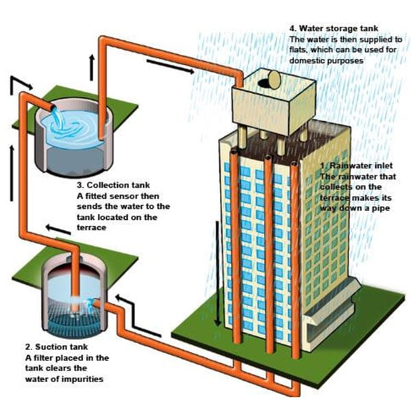

How Urban and Rural India is Employing Rainwater Harvesting Techniques
Some concerning figures about the declining groundwater level of India have been reported by the media. A Niti Ayog report claimed that twenty-one cities in India, including Delhi, Bengaluru, Chennai and Hyderabad, will run out of groundwater by 2020. This will affect the lives of around 100 million people. A simple act of rainwater harvesting, in all urban and rural areas, is the need of the hour.
Our dependency on groundwater for meeting the water demands for residential and commercial purposes has led to overexploitation of groundwater reservoirs. 85 percent of drinking water in rural and 48 percent in urban areas are getting their supply of groundwater from over 30 million access points.
How much water is available per person, depends on the population of the country. This means, uncontrolled population growth can lead to a reduction of this metric, which is the current scenario in India. In the year 2011, the per capita water availability was assessed as 1816 cubic meters, which has reduced to 1486 cubic meters in 2021.
To reduce the forthcoming water stress in the country, the water conversation activists are advocating the use the rainwater harvesting methods. Be it rural or urban areas, collecting rainwater to use for residential and commercial purposes can be done with simple cost and effective setups.
Simple to Advanced Methods of Harvesting Rainwater
Collection of rainwater by putting up the vessel under the edge of the roof is the simplest method we all have seen in our home. We have generally used that saved water to be used in the garden or for washing purposes. This idea is extended using advanced gadgets and proper setup of rainwater harvesting systems, which uses various filtration, storage and water transportation methods.
There are two broad classifications for harvesting rainwater
- Surface runoff harvesting – It employs the collection of rainwater that flows as surface runoff and adopting methods to use it for recharging aquifers. This is most suitable for Urban areas where the availability of surface runoff water is high due to tiled floors and cemented roads.
- Rooftop rainwater harvesting – Here, a proper system is deployed for collecting rainwater from the roof, which acts as a catchment area and then, the water is diverted to storage tanks through proper channels of pipe made of wood, bamboo, or PVC. This method can be employed in urban as well as rural areas.
Factors that will affect the design of the rainwater harvesting system includes the size of the catchment area, water requirement of the place and amount of rainfall received annually.
The basic components of a rainwater harvesting and storage system are comprised of the following:
A collection area or catchment, which is a rooftop in case of rooftop harvesting and surface in case of surface runoff rainwater harvesting.
A conveyance system, to transfer the water from catchments into a storage unit and includes gutters or flat roof drainage holes, downspouts and piping.
A single or multiple containers are kept above or below the ground to act as rainwater storage as a barrel, a cistern or a tank.
The filtration equipment to filter impurities and make the water drinkable.
And a distribution system comprised of pipes is installed to divert the water from the storage to the existing plumbing system of the place.

Focused: Rainwater harvesting Techniques for Groundwater Recharge
When we talk about rainwater harvesting, we are referring to a bigger picture of recharging our groundwater aquifers. Here are the most popular techniques of rainwater harvesting for groundwater recharge in Urban and Rural areas.
- Recharge Pit & Recharge Trench
A pit with a brick or stone masonry wall with weep holes at regular intervals is built in rectangular, square or circular shape with 1-2 m width and 2-3 m depth. It is most suitable for buildings up to 100 sq.m. in area.
On the other hand, recharge trench is built with usual dimensions of 0.5 to 1 m widths, 1 to 1.5m. depth and 10 to 20 m. in length, depending upon the availability of water to be recharged. And it is suitable for buildings having roof area of 200-300 sq. m.
Both the structures have boulders, placed at the bottom, gravels in between and coarse sand at the top to filter the silt content that will come with runoff water and can be removed later. A mesh is installed at the roof to keep away leaves and other solid waste and prevent it from entering the pit.
- Tubewell
Tubewell is an effective method to recharge the deeper aquifers where PVC pipes of 10 cm diameter are connected to roof drains to collect rainwater.
After discarding the first roof runoff due to impurities, the subsequent shower is taken through T to an online PVC filter of 1-1.2 m in length.
The filter is designed with three collection chambers, the first having filled with gravel (6010mm), the middle chamber has pebbles (12-20mm) and the third is filled with bigger pebbles (20-40mm). Each chamber is separated by PVC screens.
- Recharge Well
It is a precast concrete ring lined structure of 1 or 1.5 metres in diameter and goes deep into the ground to a depth of 3 to 8 metres. A recharge well takes water run-off from rooftops or paved areas and roads, filters it and sends it underground to increase the amount of water table.
There are more specific methods for rainwater harvesting, which we will cover in subsequent blogs. Hope this article has given you some glimpse into the topic.
N.S & Associates – a well-established name in Rainwater Harvesting solutions
N.S. & Associates are working towards providing sustainable and eco-friendly water conservation solutions, since 2001. Our forte lies in designing the Rainwater Harvesting System, Green Building Consultancy, designing of the plumbing system and NOC for groundwater extraction.
Having designed quality rainwater harvesting and Green Building solutions for Chatrapati Shivaji Museum, Mumbai, ONGC, Antilia-Reliance, and more, we have acquired the trust of our esteem customers. The 4000+ projects PAN India have helped us to gain experience, across all dimensions of water conservation and system designing.